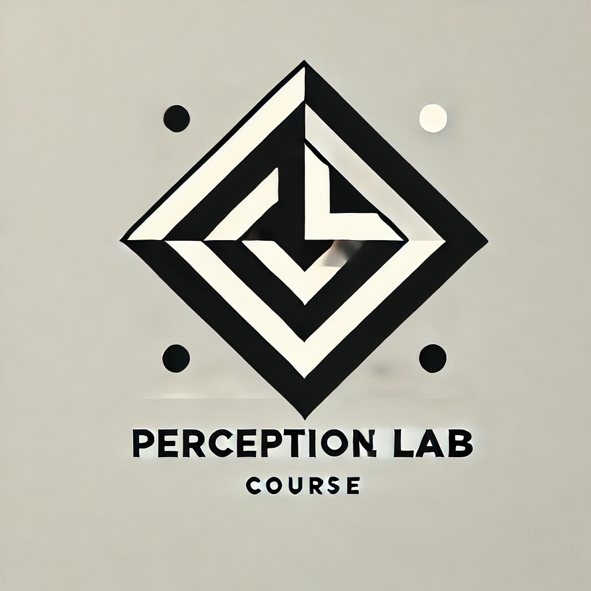

Perception Lab
Welcome

Welcome to Prof. Dr. Lauren Fink’s Perception Lab (PNB3EE3) course in the Dept. of Psychology, Neuroscience & Behaviour at McMaster University. This is a hands-on, skills-based course to expose you to the “real world” of research related to human perception. Throughout the course, you will research your own topic of interest (using primary scientific literature), design an experiment to test a hypothesis, pre-register your experiment in an industry-standard way, program (using computer code) your experiment, pilot test and simulate data for your experiment, and analyze data from your experiment (using computer code). Prior programming experience is not required but you must have a strong willingness to dive in and learn! We are here to help!
The course does not provide a thorough background on what Perception is. You already received that in your second year required coursework. Here, we are more focussed on research skills.
Learning Goals
Upon completing the course, you should be able to:
- Explain the fundamentals of human perception research, including how researchers can measure perceptual experience.
- Read, understand, and critique primary scientific research literature.
- Design and test your own research ideas, including programming basic web-based perception experiments.
- Understand best practices in open science and use relevant tools, like GitHub, R, and jsPsych.
- Work with data; visualize and analyze results.
- Write, discuss, and review primary research reports.
Course Structure
All course content and assignments will be posted on this website. However, you will turn in assignments through GitHub and/or Avenue to Learn. Don’t worry, you don’t need to know what GitHub is yet! We will discuss it in class on day one. The reason we use GitHub is because many researchers around the world use GitHub every day in their scientific workflows, whereas Avenue is a tool somewhat specific to your undergraduate education. We feel that familiarizing you with GitHub early-on will benefit you as you look for research opportunities or even industry jobs in the future.
The course outline is here. It contains an overview of all assessment criteria and relevant institutional policies. A more detailed weekly schedule, with deadlines for each assignment is available here.
Every week in class, there will be a lecture component and a hands-on component. You are expected to come to class prepared for discussions about the assigned readings and with assignments completed. Often, we will go over assignments together and discuss any points of confusion. Attendance and participation in class and tutorial is important.
The website you are currently viewing is a Quarto book containing all materials for the couse. The book consists of markdown and executable code. A first draft was created for Winter Semester 2025. It is a work in progress and under continual development alongside iterations of the course.
Use the navigation bar at the left to view course contents by week (number) and topic. While most contents are nested within week, important documents (like the course outline) have their own top-level heading page.
Contributing
Teaching assistants and students are welcomed and encouraged to contribute to this courseBook – if you spot an error or see room for improvement, create a pull request and I’ll be happy to review and incorporate the requested change.